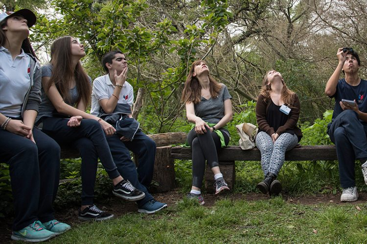

3 ACIONES SENCILLAS QUE PUEDES HACER PARA SALVAR ESPECIES EN PELIGRO DE EXTINCÍON.
1-Enséñale a tu familia y amigos sobre la flora y fauna que se encuentra cerca de ti. El primer paso para proteger especies en peligro es aprender cuán importantes e interesantes son. El ambiente nos provee servicios ecosistémicos indispensables como puede ser la disminución de la contaminación del aire y agua, recursos alimenticios y naturales con valor económico como también elementos estéticos y recreacionales.
2-Guarda de forma segura tu basura en tachos con tapa y cerradura, alimenta a tus mascotas dentro del hogar y no permitas que pasen la noche fuera de este, de esta manera evitaras atraer animales a las cercanías de tu hogar. Reducí el consumo de agua doméstica y en tu jardín para que la flora y fauna dependiente de esta tenga mayores chances de sobrevivir. Si tienes bebederos para aves desinfectarlas regularmente para disminuir las posibilidades de transmisión de enfermedades. Utiliza calcomanías sobre las ventanas de tu oficina y hogar para alertar a las aves y evitar así que estas colisionen.
3-Plantas nativas proveen alimento y refugio para la fauna silvestre. Atraer insectos como abejas y mariposas ayuda a polinizar tus plantas. Al mismo tiempo la proliferación de especies invasoras ha impactado la población de estas últimas ya que compiten por hábitat y alimento. Incluso algunas pueden ser depredadoras de especies nativas, forzando de esta manera su extinción.